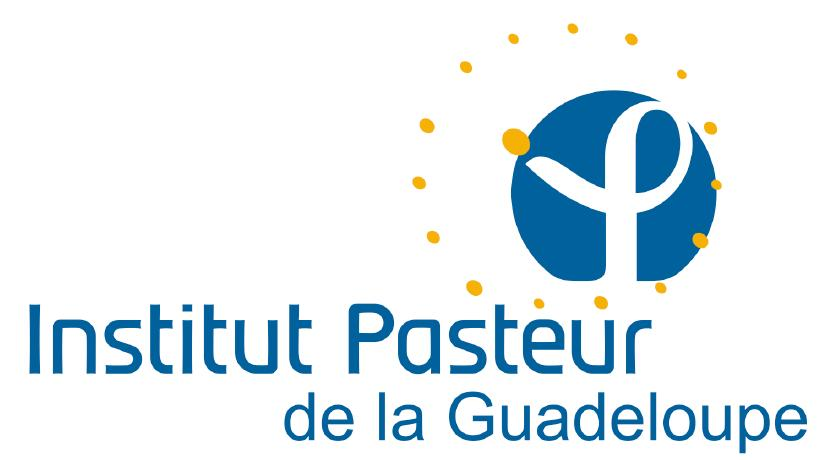
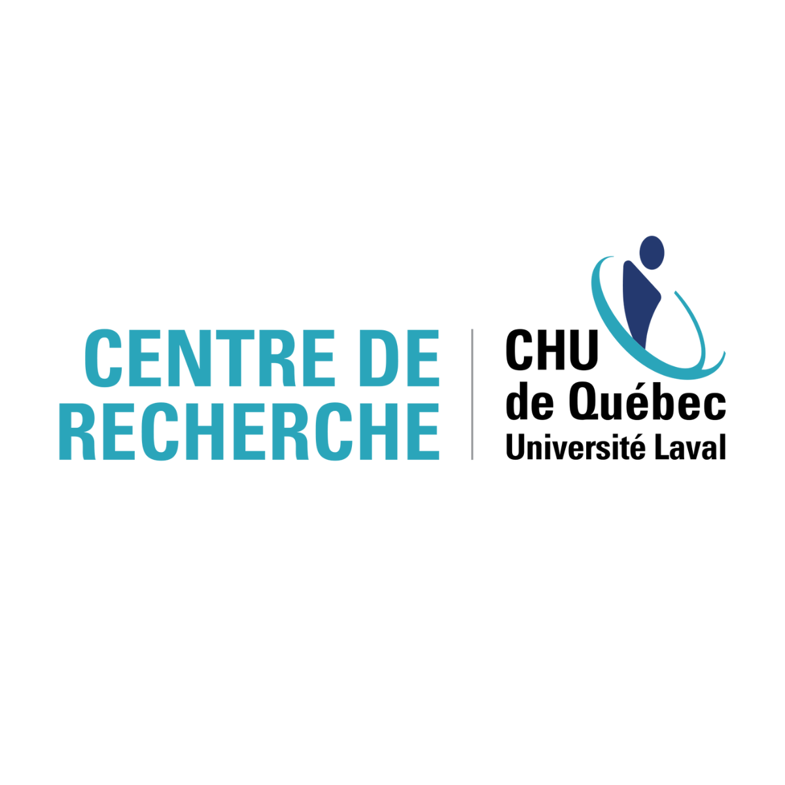
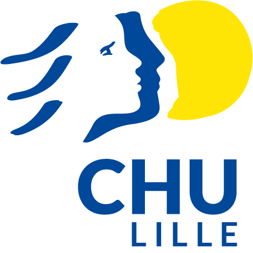
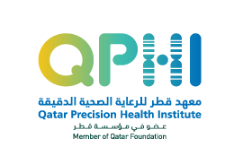
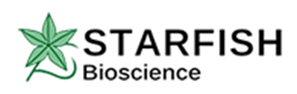

About Me
I'm a senior bioinformatics developer with nearly 20 years of experience in healthcare and research. My career has grown at the intersection of biology, computing, and systems architecture.
I bring a unique combination of skills: development (Bash, AWK, Perl, Python, Groovy, Java, C), systems administration (HPC, containers, job schedulers), and deep domain knowledge in genomics and computational biology. My work includes designing and deploying robust Nextflow pipelines on cloud platforms such as Google Cloud, Microsoft Azure, and OVHcloud, optimising them for cost, scalability, and reproducibility. I also provide infrastructure guidance for scientific teams to make the most of both on-premise and cloud environments.
My bioinformatics experience covers HLA typing, variant calling, structural variant analysis, annotation workflows (VEP, SnpEff), quality control (FastQC, MultiQC, Mosdepth, CoverM), expression analysis (Cufflinks, featureCounts), metagenomics, and proteomics. I also have extensive experience with the Illumina DRAGEN suite, having used it for many years, and work with a wide range of tools including BWA, minimap2, HISAT2, samtools, bedtools, and GATK.
Whether it involves tuning SLURM job schedulers, writing reproducible Nextflow pipelines, or crafting efficient AWK one-liners, I enjoy digging into the core of problems to deliver simple, robust solutions. I apply the KIS principle (Keep It Simple) in everything I build.
My background in Perl, C, and C++ is a genuine asset: I've been asked more than once to modernise legacy pipelines built in these languages, and knowing them deeply — their idioms, their performance characteristics, their failure modes — means I can migrate them faithfully to Nextflow without losing the intent of the original logic. Most bioinformaticians today have never had to debug a segfault or optimise a tight Perl loop. I have, and that matters when the job is to rewrite something that works and make it work better.
Skills
- Programming & Scripting: Bash, AWK, Perl, Python, Groovy, Java, C, C++, Rust, R, Ruby, HTML/CSS, JavaScript, XML
- Genomics & NGS: Whole genome & exome analysis, HLA typing (HLA-HD, T1K, HISAT-genotype), variant calling (GATK, samtools, DRAGEN), annotation (VEP, SnpEff), CNV and SV detection, sequencing QC (FastQC, MultiQC, Mosdepth), targeted panel support
- Transcriptomics: Expression quantification (Cufflinks, featureCounts), normalization, differential expression analysis, integration with clinical data
- Metagenomics & Microbiome: Long/short-read assembly, binning, taxonomic profiling (soil & clinical microbiomes), diversity analysis, and QC
- Proteomics: Mass spec data analysis (ProteinPilot, Mascot, Scaffold, X!Tandem), MS/MS interpretation, quantitative workflows
- Workflow & Automation: Pipeline development using Nextflow, nf-core, Snakemake, Quarto; R package development; Python library development; reproducibility practices; reporting pipelines; tool benchmarking
- Containers & Environments: Apptainer/Singularity, Docker, environment management (Conda, Mamba, Modules)
- Infrastructure & Systems: HPC (SLURM, OAR, LSF), cloud (GCP, Azure, OVHcloud), Magic Castle HPC cluster deployment, parallelisation, storage strategies, Terraform, Ansible
- Data Management: MySQL, PostgreSQL, SQLite, Oracle, LIMS (custom + Ruby on Rails), versioning (Git, Subversion, CVS)
- Best Practices: CI/CD, software documentation, standardisation, FAIR principles, testing, training and support to research teams
- Soft Skills: Pragmatic mindset, clear communication, multilingual (FR/EN), mentoring, workshop design, cross-functional collaboration
Consulting Services
I work with teams that have the biology expertise and the data — but need someone to structure, build, or improve their analytical infrastructure. Here's where I can help:
Workflow Design
Designing and optimising bioinformatics pipelines — Nextflow, HPC, cloud-native.
Cloud Architecture
Cloud infrastructure for genomics (GCP, Azure, OVHcloud) — scalable and cost-efficient.
Genomics Analysis
HLA typing, WGS, RNA-seq — from raw data to clinical-grade interpretation.
Pipeline Audit
Infrastructure review, reproducibility assessment, and documentation for existing workflows.
Training & Mentoring
Workshops and mentoring on Nextflow, Bash, AWK, and workflow best practices.
Legacy Pipeline Migration
Modernising Perl, C, or Bash pipelines to Nextflow — preserving the original logic, eliminating the technical debt.
If you need technical guidance, strategic support or hands-on help with bioinformatics infrastructure, feel free to get in touch.
Collaborations
I've had the opportunity to contribute to projects across several research and clinical institutions:





Logos shown are used for informational purposes only and remain the property of their respective organisations.
Open Resources
Tools and guides I've built for the bioinformatics community:
I Love Testing
A hands-on resource for adopting testing practices in bioinformatics workflows — built to help teams write more reliable pipelines.
Professional Experience
- 2025 - Senior Bioinformatics Developer, Starfish Biosciences (France): Acted as technical lead and pipeline advisor — guided the team in structuring and normalising a long-read metagenomic pipeline, applied best practices for reproducibility and scalability on OVHcloud HPC infrastructure using Nextflow and Apptainer.
- 2024-2025 - Freelance Consultant (France): Provided strategic guidance for transitioning to reproducible and modular pipelines. Supported teams in infrastructure design and workflow optimisation.
- 2022-2024 - Senior Bioinformatician Scientist, Qatar Genome Program (Qatar): Led the development of a specialised HLA reference panel for the Arab population from 29,824 individuals — designing a meta-algorithm integrating HISAT-genotype, HLA-HD, and T1K, and contributing to training a deep learning model for HLA genotype imputation. Co-led DRAGEN integration into the QGP workflow, overseeing reanalysis of a 40k WGS dataset.
- 2013-2021 - Bioinformatics Engineer, CHU de Lille (France): Designed and maintained diagnostic sequencing pipelines across 12+ clinical care areas over 8 years. Integrated Nextflow for workflow standardisation, deployed scalable HPC environments with SLURM/OAR, with strong emphasis on clinical compliance and reproducibility.
- 2011-2013 - Bioinformatics Engineer, IRC-Lille (France): Analysed miRNA data for lymphoma prognosis research. Developed cluster-based analysis workflows.
- 2009-2010 - Research Professional, CRCHUL (Canada): Built proteomics data integration tools and a Ruby-on-Rails LIMS linked to mass spec analysis platforms.
- 2006-2008 - Bioinformatic Software Engineer, Institut Pasteur de Guadeloupe: Developed genotyping database systems and data mining tools for tuberculosis research.
Publications & Talks
- 2024 — Talk · SHLARC-SIP Symposium on Immunoinformatics, Nantes, France: Navigating HLA Typing Challenges in a Population-Wide Whole-Genome Sequencing Project.
- 2023 — Poster · ASHG Annual Meeting: Developing a shareable HLA imputation reference panel for the Arab population. Demay C. et al.
- 2008 — Journal article · Infection, Genetics and Evolution: SITVITWEB — A publicly available international multimarker database for studying Mycobacterium tuberculosis genetic diversity and molecular epidemiology. Demay C. et al.
- 2008 — Conference · 29th Annual Congress of the European Society of Microbacteriology (ESM), Plovdiv, Bulgaria: Tuberculosis — a global emergency: an overview of methods and tools to control, understand and track the TB epidemic worldwide. Demay C., Zozio T., Millet J., Rastogi N.
- 2008 — Conference · Research on Infectious Diseases: A Global Challenge, Institut Pasteur Network, Paris: Tuberculosis in the French Departments of the Americas: Epidemiology, drug resistance and geographical tracking of the major genotypic lineages of Mycobacterium tuberculosis. Millet J. et al. (incl. Demay C.)
Contact Me
Interested in a collaboration or consulting support?
You can reach out directly by email or connect via GitHub or LinkedIn:
I work remote-first, with occasional on-site visits when needed. I'm open to project-based missions and longer-term engagements, with research institutions, clinical labs, and genomics organisations.